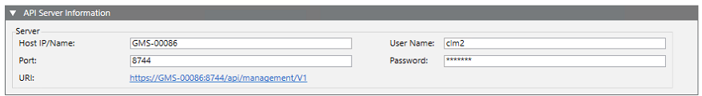

Connect to the SiPass Server
This procedure is part of the workflow for integrating SiPass access control.
Prerequisites
- You configured the SiPass driver and network, and the driver is started.
Create a SiPass Server Under the Network
You can configure multiple SiPass servers under one SiPass network. Skip this step if you want to connect or check the settings of an existing SiPass server.
- Select Projects > Field Networks > [SiPass network].
- In the Operation tab, check that Driver Associated is
Trueand Network State isSupervised.
NOTE: If the network isUnsupervisedit means either that the network has no associated driver, or that its associated driver is not running. - In the Sipass tab, click Create New Server
 .
.
NOTE: This command is disabled if the network isUnsupervised. - In the New object dialog box, enter a name and description.
- Click OK
- The SiPass server is added to System Browser.
The SiPass server object created in Desigo CC must now be connected to the SiPass integrated server that monitors the access controllers.
Prepare for Connection
- If the SiPass driver runs on a FEP station:
a. Export the Desigo CC Security Key from the server station.
b. Import it into the FEP station via SMC. - To check the connection:
- Try to ping the SiPass server computer (using the host computer name) from the Desigo CC computer (server or FEP) where the SiPass driver runs.
- If the ping fails, you need to fix the IT network connectivity
Connect Desigo CC to the SiPass Integrated Server
- Select Projects > Field Networks > [SiPass network] > [SiPass server].
- In the API Server Information expander, complete the following fields:
- Host IP/Name: Enter the IP address or name of the computer running the SiPass RESTful Management Station API, through which Desigo CC connects to SiPass. This may be the same computer as the SiPass integrated server, or a different one. Note that the SiPass integrated server is always hosted on a separate computer from the Desigo CC server, however the RESTful MS API may be hosted on the Desigo CC server computer.
- Access API Port: Default value is 8744. This setting must match the Management Station Service port configured during the setup of the SiPass integrated server.
NOTE: In SiPass integrated, the port number is defined during setup, but you can modify it as described in SiPass Configuration Problems. - User Name and Password of the SiPass operator, as configured in the SiPass Integrated Configuration Client.
NOTE: The operator must be a SiPass administrator with time schedule Always available. - Click Save
 .
. - In a few seconds, the communication between Desigo CC and the SiPass integrated server is established.
